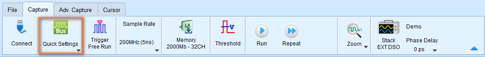

Quick Start
A step-by-step walkthrough to help you capture, analyze, and export your first waveform with the Logic Analyzer.
Before you begin
Make sure you have:
- A Logic Analyzer hardware plugged into your PC USB port
- A signal source available for testing (e.g., I2C sensor, SPI device, oscillator, etc.)
- Connect the signal wires between the Logic Analyzer hardware and the signal source.
-
The latest version of the Logic Analyzer software installed
- If not, check the Software Installation guide.
We take I2C as an example in this guide shortly.
Step 1: Start a Logic Analyzer mode session
1.1 Connect the Device
- Connect the Logic Analyzer to your computer via USB
- Wait for the device driver to load
- Launch the TravelLogic software
1.2 Verify Connection
Check the status bar at the bottom of the window:
- Green indicator: Device connected and ready
- Red indicator: Device not detected - check USB connection
Model information should display in the status bar (e.g., "LA4136B Connected").
Step 2: Capture Settings
2.1 Setup with Quick Settings (Recommended for Beginners)
Quick Settings provides preset configurations for common protocols, saving time on manual setup. It immediately configure required channels and related settings. When configuring specific bus decode, the sampling rate and threshold are automatically set according to default conditions.
If you're trying to capture a common protocol like I2C:
-
Click on the Quick Settings button in the toolbar

-
Select the protocol you want to capture from the dropdown list. Here we select I2C and there will be a dialog popup to configure the parameters for I2C.

It will make some changes to the capture settings to make it suitable for I2C. As you can see,
- Sample rate is set from 200 MHz to 50 MHz (usually pick the 10 times of the signal frequency)
- Threshold is set to 1.6V (half of the supply voltage, which is 3.3V most of the time)
- Trigger type is set to Single Level Trigger (to help us capture the data when the signal changes)
- Channel Settings shows Overwrite, which means the software will overwrite the existing channel configuration with the new ones for I2C.
Typically, you don't need to change the parameters for I2C. Just click Apply to finish the configuration.
Note
You can always pick on the current settings by clicking the parameters listed in the Current column.
-
(Optional) You can enable the Transitional Storage to capture the data for longer time. Leave it unchecked for now.
-
Click Apply
Skip to Step 3: Capture Data after you have configured the capture settings.
2.2 Manual Channel Configuration (Advanced)
As mentioned above, Quick Settings is a good choice for beginners. But if you want to configure the channels manually, you can do the following steps.
For custom configurations or protocols not in Quick Setting:
- Click the "+" (Add Label) button in the channel label area
- Select channels you want to monitor
- Click on each channel label to rename it (e.g., "Clock", "Data", "Enable")
- Connect your probe tips to the signal source
Channel assignment tips:
- Use descriptive names that match your circuit
- Start with fewer channels (4-8) until familiar
- Group related signals together
Step 3: Capture Data
3.1 Start Capturing Data
- Click the Start button in toolbar (or press Enter)
- The status changes to "Waiting for trigger"
3.2 Trigger the Capture
For automatic triggers:
- Generate activity on your circuit (e.g., send I2C transaction)
- Capture stops automatically when trigger condition is met
For manual trigger:
- Click Stop button to set trigger point at current moment
3.3 Review Captured Data
Once capture completes:
- Waveform appears in the waveform area
- Trigger point is marked (usually center of display)
- Status bar shows "Stopped"
First-time tips:
- Use mouse wheel to zoom in/out
- Click and drag to pan left/right
- Look for your expected signal patterns
Step 4: Decode Protocol (Optional)
If you captured a bus protocol, decode it to see transactions.
4.1 Add Protocol Decode
If you used Quick Setting: Protocol decode is already configured - skip to 8.2.
For manual decode:
- Click "+" → Add Protocol Decode in channel label area
- Select protocol type (I2C, SPI, UART, etc.)
- Assign channels to protocol signals
- Configure protocol parameters (baud rate, address format, etc.)
- Click OK
4.2 View Decode Results
In waveform area:
- Protocol annotations appear above waveform
- Shows addresses, data, ACK/NAK, etc.
In report area:
- Detailed transaction table appears below waveform
- Each row represents one transaction
- Columns show address, data, control signals
4.3 Interpret Results
For I2C:
- Look for START condition
- Check slave address (7-bit or 10-bit)
- Verify data bytes
- Confirm ACK/NAK responses
For SPI:
- Check chip select (CS) assertion
- Verify MOSI data (master → slave)
- Verify MISO data (slave → master)
- Count clock cycles
For UART:
- Check start/stop bits
- Verify baud rate detection
- Look for framing errors
- Check parity if enabled
See: Bus Decode for all supported protocols.
Step 5: Save and Export
Preserve your work and share results.
5.1 Save Waveform File
- Click File → Save (or Save As)
- Choose location and filename
- Save as .TLW format (preserves all settings)
- Click Save
Benefit: You can reopen the file later with all decode and cursor settings intact.
5.2 Export Decode Report
- In the Report Area, click the Save button
- Choose CSV or TXT format
- Select location and filename
- Click Save
Use cases:
- Import to Excel for analysis
- Include in test reports
- Share with team members
5.3 Export for Other Tools
For waveform viewers (GTKWave, etc.):
- Click File → Save As
- Select Value Change Dump (*.vcd) format
- Save file
For MATLAB analysis:
- Click File → Save As
- Select MATLAB array file (*.m) format
- Save file
See: Export Data for all export options.
Step 6: Further Analysis (Optional)
Cursors let you measure time between events precisely.
6.1 Add Cursors
- Hold Shift key
- Click on the waveform to place first cursor (Cursor 1)
- Click again to place second cursor (Cursor 2)
Result: Time difference (ΔT) displays at the bottom of the screen.
6.2 Move Cursors
- Click and drag cursor line to reposition
- Or use arrow keys for fine adjustment (select cursor first)
6.3 Common Measurements
Measure clock period:
- Place Cursor 1 on rising edge
- Place Cursor 2 on next rising edge
- ΔT = clock period
- Frequency = 1 ÷ ΔT
Measure pulse width:
- Place Cursor 1 on rising edge
- Place Cursor 2 on falling edge
- ΔT = high pulse width
Measure setup time:
- Place Cursor 1 on data change
- Place Cursor 2 on clock edge
- ΔT = setup time
See: Cursor Measurements for advanced cursor operations.
Step 6.4: Use Statistics and Measurements
Generate automated measurements on your signals.
6.4.1 Open Waveform Statistics
- In the Report Area toolbar, select Waveform Data Statistics
- Choose the channel you want to measure
- Select measurement type from dropdown
6.4.2 Common Measurements
Frequency measurement:
- Select channel (e.g., Clock signal)
- Choose Frequency measurement
- Result appears in report area
Period measurement:
- Select channel
- Choose Period measurement
- Shows time between consecutive edges
Pulse width:
- Select channel
- Choose Positive pulse width or Negative pulse width
- Shows duration of high/low states
6.4.3 Channel-to-Channel Delay
Measure timing relationship between two signals:
- Select first channel
- Choose delay measurement type (e.g., "Channel rising to channel falling delay")
- Select second channel when prompted
- Delay time displays in report
See: Report Area - Waveform Statistics for all measurement types.
Next Steps
Improve Your Skills
- Try different trigger types: Multi-level triggers for complex conditions
- Explore capture modes: Synchronous mode for state analysis
- Learn annotations: Add text and graphics to document findings
- Master cursors: Use multiple cursors for parallel measurements
Advanced Features
- Power sequence timing validation: Automate checks with horiztonal timing validation
- Mixed-signal analysis: Combine with Stack Oscilloscope
- Glitch filtering: Remove noise with Hardware/Software filters
- Custom reports: Create customized decode reports
Practice Scenarios
Scenario 1: Verify I2C Communication
- Configure I2C decode
- Capture sensor read transaction
- Verify address and data bytes
- Measure clock frequency and duty cycle
Scenario 2: Debug SPI Timing
- Set up SPI decode
- Place cursors on setup and hold times
- Verify timing meets datasheet specs
- Export timing measurements
Scenario 3: Analyze UART Issues
- Configure UART decode with known baud rate
- Capture communication
- Check for framing errors
- Measure actual vs. expected baud rate
Troubleshooting Tips
Problem: Capture doesn't trigger
- Check trigger channel is connected
- Verify signal is active (generating transitions)
- Try Manual trigger to capture anyway
- Lower trigger Pass Count to 0
Problem: Waveform looks noisy
- Check probe connections (loose wires?)
- Verify threshold voltage is correct
- Try Glitch Filter
- Increase sample rate
Problem: Decode shows errors
- Verify channel assignments are correct
- Check sample rate is high enough (≥10× signal frequency)
- Confirm protocol settings (baud rate, clock polarity, etc.)
- Verify threshold voltage matches logic family
Problem: Can't see enough waveform
- Increase memory depth setting
- Adjust trigger position (more post-trigger %)
- Use Transitional Storage for longer captures